Dentista da família no Jardim Aricanduva, desde 2002
Clínica geral, aparelho e alinhador, implante e prótese, clareamento e harmonização orofacial. Atendemos 12 convênios e também particular.
WhatsApp da Unidade São Paulo: (11) 96499-9718
4,7 no Google · 130 avaliações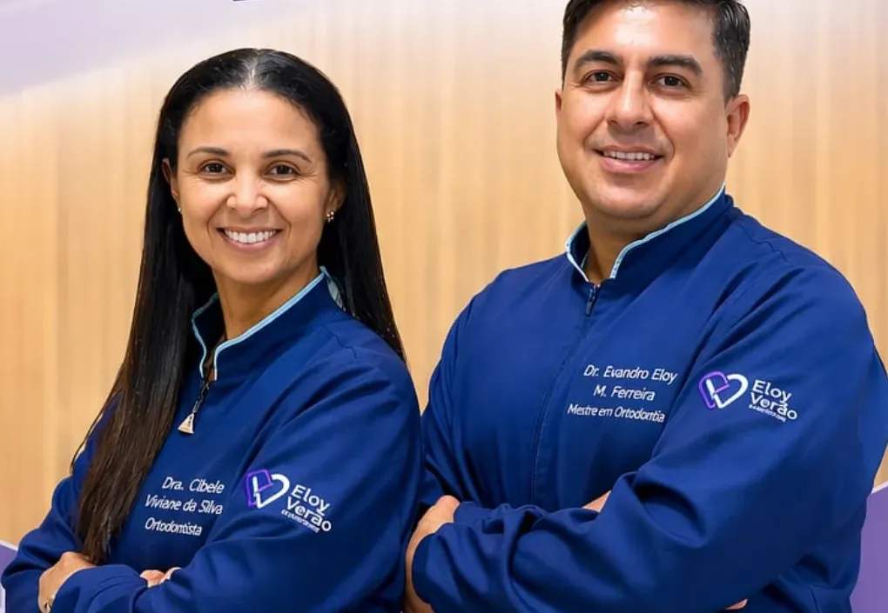
12 convênios e particular, com o mesmo cuidado
Se o seu plano está na lista, você já pode marcar. A cobertura muda de plano para plano e de tratamento para tratamento: escolha o seu e pergunte direto pelo WhatsApp.
- Amil Dental
- DentalUni
- Dentalpar
- Hapvida
- INPAO Dental
- Interodonto
- OdontoGroup
- Odonto Empresas
- Prevident
- Santander Odontologia
- SulAmérica Odonto
- W.Dental
Por onde você quer começar?
-
“Faz tempo que não vou ao dentista.”
Marcar consultaClínica geral e prevenção
Consulta, limpeza, restauração e tratamento de canal, com a Dra. Aline Okuyama.
-
“Queria arrumar os dentes tortos.”
Perguntar sobre aparelhoAparelho e alinhador
Ortodontia com aparelho fixo ou alinhador transparente. A ortodontia é a área dos dois sócios e da Dra. Cláudia Palhares.
-
“Perdi um dente e quero voltar a mastigar sem medo.”
Agendar avaliaçãoImplante e prótese
Implantes, próteses, pontes e dentaduras. O plano de tratamento sai da avaliação.
-
“Queria os dentes mais brancos.”
Perguntar sobre clareamentoClareamento dental
Com a Dra. Giovanna Diniz. Tem um caso dela logo abaixo.
-
“Quero suavizar as linhas, sem perder a naturalidade.”
Falar sobre harmonizaçãoHarmonização orofacial
Toxina botulínica, preenchimento e bioestimulador de colágeno, com a Dra. Bruna Okuyama.
-
“Meu filho tem medo de dentista.”
Marcar para uma criançaAtendimento infantil
Consulta com calma e paciência, do jeito que as famílias contam nas avaliações.
Antes e depois, de pacientes da clínica
Fotos de casos que a própria clínica publicou. Cada caso é único: o plano e o resultado dependem da avaliação.
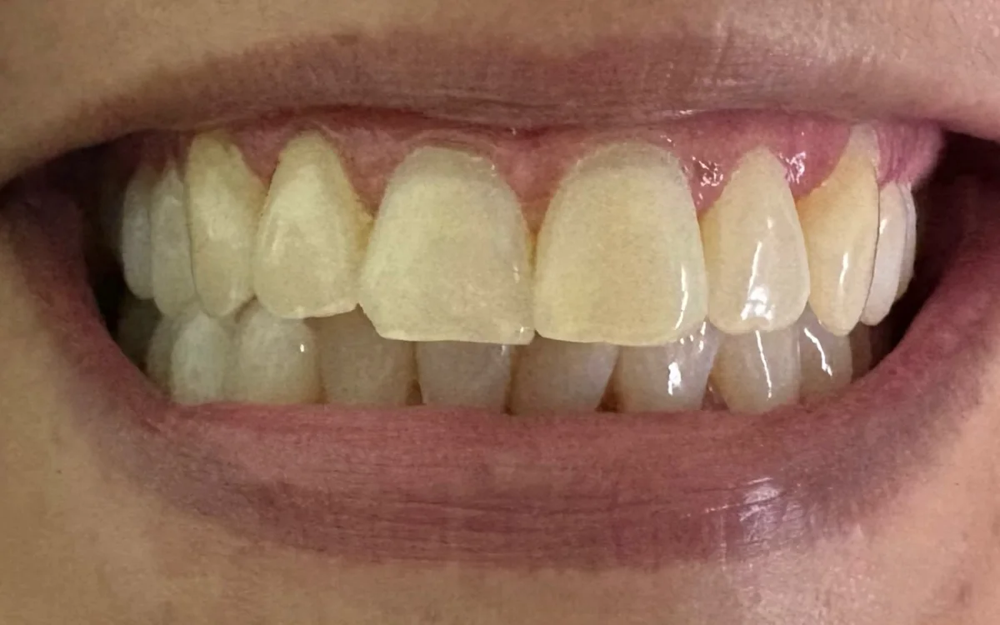
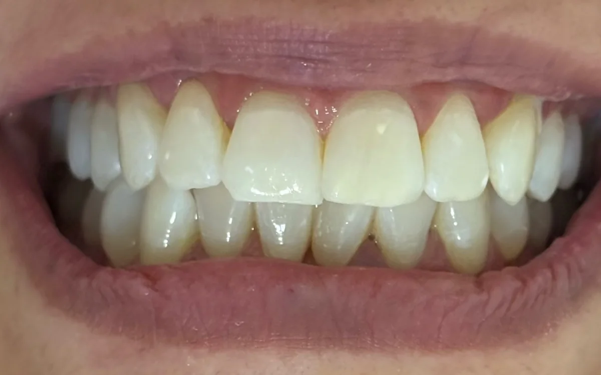
-
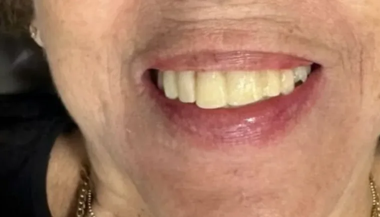
Antes 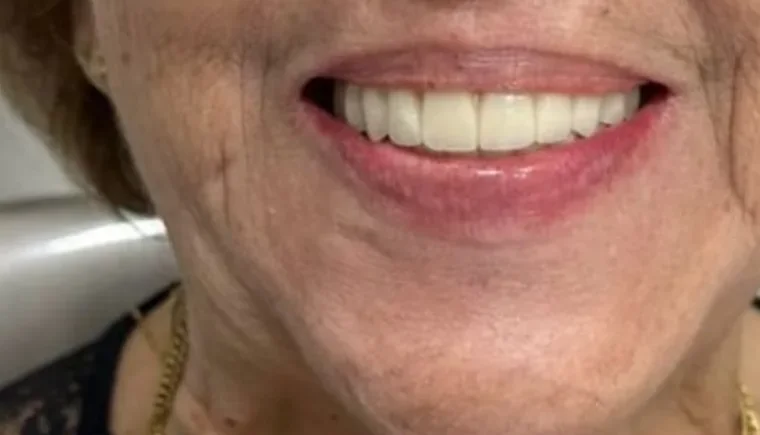
Depois Reabilitação do sorrisoCaso publicado pela clínica.
-
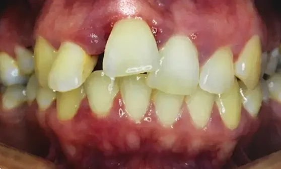
Antes 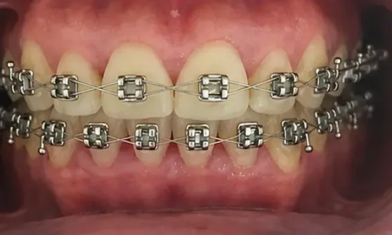
Durante Ortodontia, em andamentoDra. Cláudia Palhares.
-
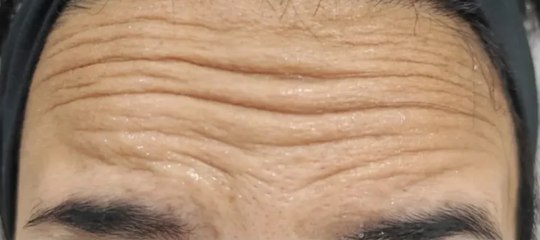
Antes 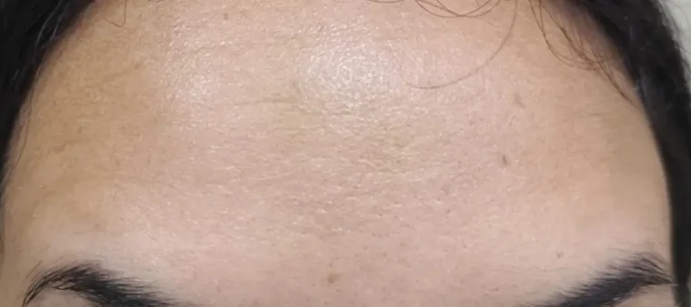
Depois Toxina botulínica na testaDra. Bruna Okuyama.
Demonstração: na versão oficial, cada caso entra só com a autorização do paciente confirmada.
Quem cuida de você
Em 2002, o Dr. Evandro Eloy, mestre em Ortodontia, abriu a clínica aqui em São Paulo. Hoje ele divide a direção com a Dra. Cibele Viviane da Silva, que também atende ortodontia. Tem paciente que se trata aqui há mais de 20 anos.
Desde o início, nosso propósito sempre foi cuidar de pessoas com excelência, ética e humanização.
-
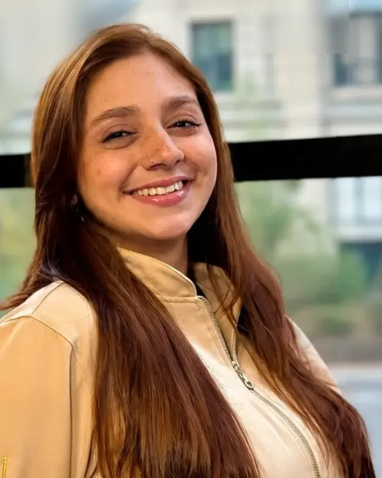
Dra. Giovanna Diniz
Cirurgiã-dentista. Clareamento e atendimento de crianças.
-
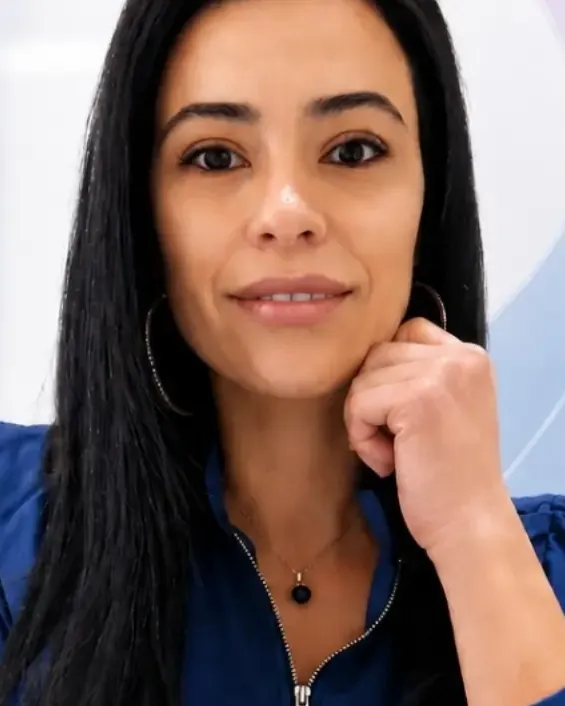
Dra. Bruna Okuyama
Harmonização orofacial: toxina, preenchimento e bioestimulador.
-
Luciana, a Lú
Técnica em saúde bucal.
Também na equipe: Dra. Cláudia Palhares, na ortodontia, e Dra. Aline Okuyama, no tratamento de canal.
Nota 4,7 no Google, em 130 avaliações
Os pacientes falam da equipe pelo nome. Algumas das avaliações, com as palavras de quem escreveu:
Atendimento maravilhoso. Profissionais de excelência. Sou paciente há mais de 20 anos e super indico.
A minha filha passa na eloy verao, com a Dra Janaina desde 2022. E a Dra janaina conseguiu tirar todos os traumas que ela teve de atendimentos anteriores, nao troco por nada e sou muito grata pelo atendimento humanizado que ela tem.
Dra Giovanna sensacional com crianças. Uma paciência enorme e bem delicada.
A dentista Cibele é espetacular! Carinhosa, cuidadosa e se importa muito com o paciente. Adorei o ambiente! Super recomendo e indico, a Dra Cibele já é dentista da família e será dos amigos também.
Atendimento top o melhor que já tive atenciosas,simpáticas super indico […] Hoje em especial a técnica Luciana amei parabéns pelo trabalho que faz com dedicação.
Atendimento maravilhoso, recepcionistas super gentis e competentes, dentista Dra Alice é uma profissional incrível e muito zelosa.
Ler todas as avaliações no Google Avaliações copiadas do Google em 5 de outubro de 2026.
Antes de marcar
Vocês atendem o meu convênio?
Atendemos 12 convênios: Amil Dental, DentalUni, Dentalpar, Hapvida, INPAO Dental, Interodonto, OdontoGroup, Odonto Empresas, Prevident, Santander Odontologia, SulAmérica Odonto e W.Dental. A cobertura de cada tratamento depende do seu plano; a recepção confirma pelo WhatsApp.
Atendem crianças?
Sim. A Dra. Giovanna Diniz atende crianças, e muitas famílias contam nas avaliações que os filhos perderam o medo de dentista aqui.
Quanto custa?
Depende do tratamento e do seu caso, por isso o valor é definido na avaliação, sem compromisso de fechar nada na hora. Se você não tem plano, pergunte pelas condições para particular.
Abre aos sábados?
Sim, das 9h às 14h. De segunda a sexta, o atendimento vai das 9h às 19h.
Esta é a Eloy Verão de Dourados?
Não. Este site é da Unidade São Paulo, no Jardim Aricanduva. A Eloy Verão também tem uma unidade em Dourados (MS), com outro endereço e outro WhatsApp.
Fica na Rua Antônio La Giudice, 345
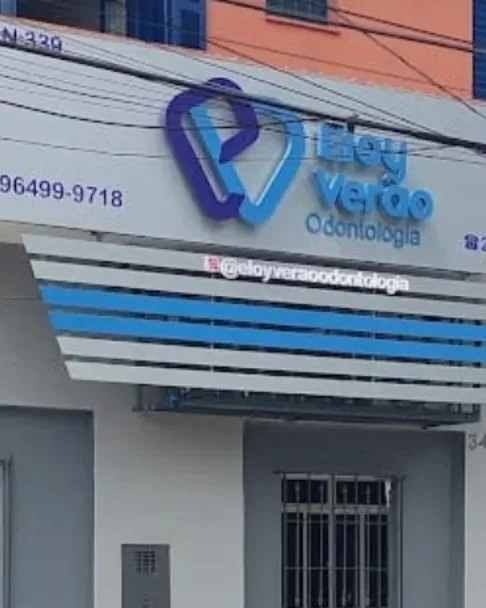
- Endereço
- Rua Antônio La Giudice, 345
Jardim Aricanduva, São Paulo – SP
03456-060
Como chegar - Horário
- Segunda a sexta, das 9h às 19h
Sábado, das 9h às 14h - Telefones
- WhatsApp (11) 96499-9718
Fixo (11) 2726-6239